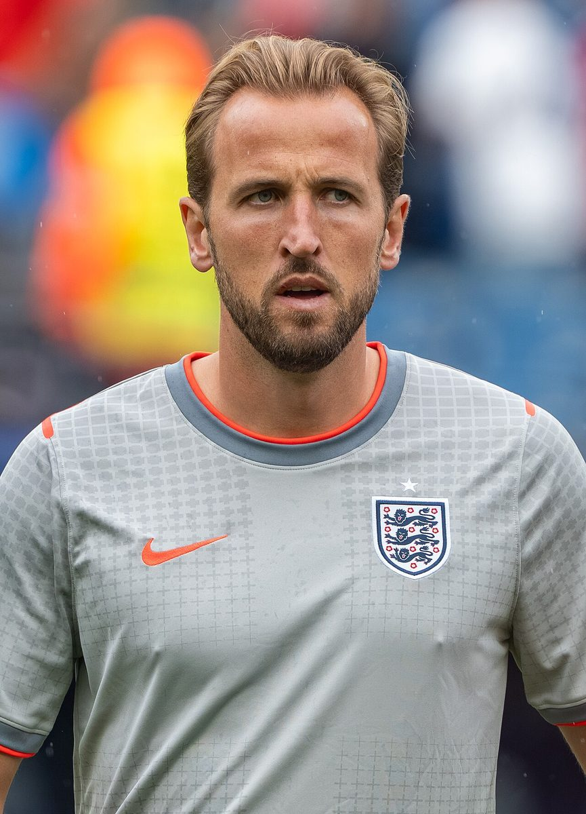
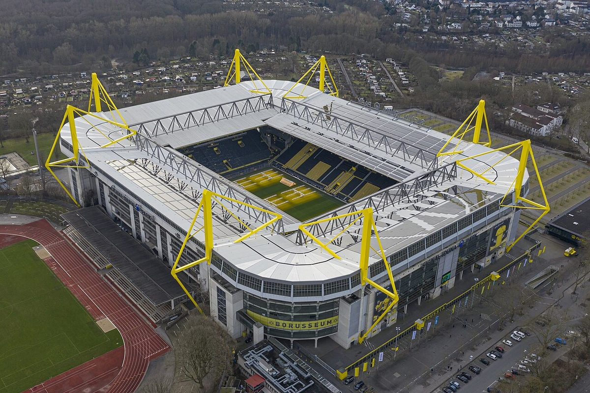

«Дортмунд» оторвался от «Баварии» на два очка на фоне травмы Кейна
Непобедимая команда Нико Ковача возглавляет таблицу после десяти туров, пока «Бавария» Венсана Компани потерпела первое поражение в сезоне от «Лилля» без Харри Кейна.

По итогам десяти туров дортмундская «Боруссия» единолично возглавляет Бундеслигу с отрывом в два очка. Команда Нико Ковача набрала 24 очка благодаря семи победам и трем ничьим, опережая «Баварию» и «Фрайбург», у которых по 22 балла, свидетельствуют данные официальной таблицы чемпионата Германии. При этом ни «Дортмунд», ни «Бавария» в нынешнем розыгрыше Бундеслиги еще не проигрывали.
Последнее чемпионство дортмундцев датировано 2012 годом, когда командой руководил Юрген Клопп. В 2023 году «Боруссия» упустила титул в заключительном туре, сыграв вничью 2:2 с «Майнцем»: «Бавария» тогда сравнялась по очкам и вырвала чемпионство по разнице мячей.
Фундамент из надежной обороны

Лидерство «Дортмунда» держится на надежных тылах. Согласно таблице Бундеслиги, команда пропустила всего семь мячей за десять встреч. «Бавария» забила куда больше — 30 голов против 17 у «Боруссии», но потеряла очки из-за четырех ничейных исходов.
Лазарет Ковача тоже не пустует. 29 августа в дебютном матче против «Гамбурга» разрыв крестообразной связки левого колена получил Яннис Константелиас (Giannis Konstantelias) — клуб сообщил, что он выбыл на несколько месяцев. Капитан Эмре Джан не выходит на поле с 28 февраля, когда порвал крестообразную связку в поединке с «Баварией».
«Бавария» без Кейна
Проблемы мюнхенцев обострились за последнюю неделю. 20 ноября в матче против «Кёльна» (1:1) Харри Кейн повредил связки левого голеностопа и перенес операцию. В клубе заявили, что форвард пропустит «ближайшие несколько месяцев», а спортивный директор Макс Эберль уточнил, что речь идет примерно о трех месяцах, передает ESPN. По данным Al Jazeera, на счету Кейна 156 голов в 161 матче за «Баварию».

Спустя пять дней мюнхенцы уступили на выезде «Лиллю» со счетом 1:2 в Лиге чемпионов, потерпев первое поражение в сезоне, сообщает AP. Единственный мяч у «Баварии» забил Дайо Упамекано.
Список травмированных у Венсана Компани внушительный. По данным AP и ESPN, вне игры вратарь Мануэль Нойер, у Майкла Олисе ушиб передней части стопы (он пропустит субботний выезд в Гамбург), Серж Гнабри и Альфонсо Дэвис залечивают травмы задней поверхности бедра, а Исмаэль Сайбари (Ismael Saibari) перенес операцию на голеностопе. Есть и позитивные новости: Луис Диас вернулся в строй, выйдя на замену против «Лилля», а Джамал Мусиала выходил со скамейки в двух последних встречах.
Впереди выходные
В субботу, 28 ноября, «Бавария» сыграет на выезде с «Гамбургом». В воскресенье, 29 ноября, «Дортмунд» примет леверкузенский «Байер». В Леверкузене прекрасно знают, каково это — пройти дистанцию без поражений: в сезоне-2023/24 «Байер» завершил чемпионат без единого проигрыша и оторвался от преследователей на 17 очков.